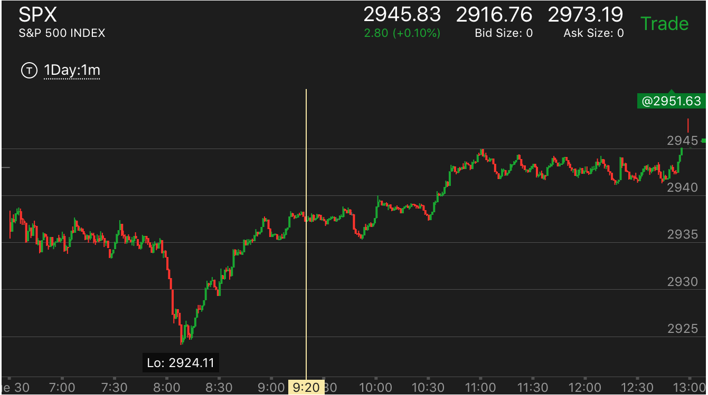
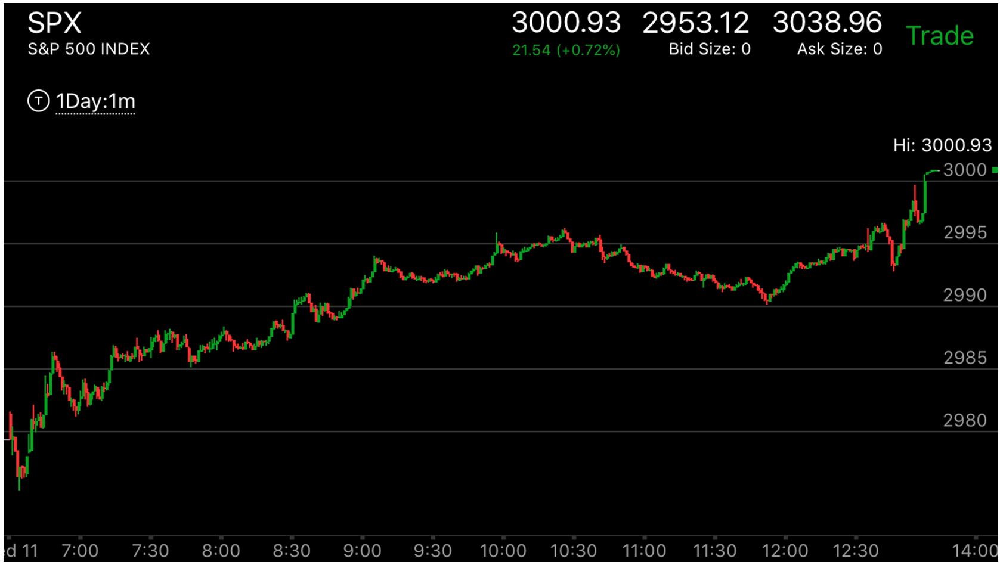
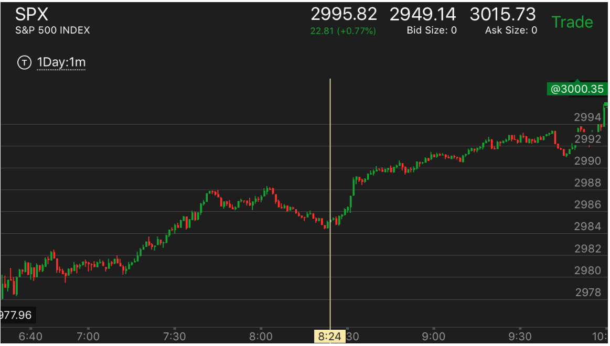
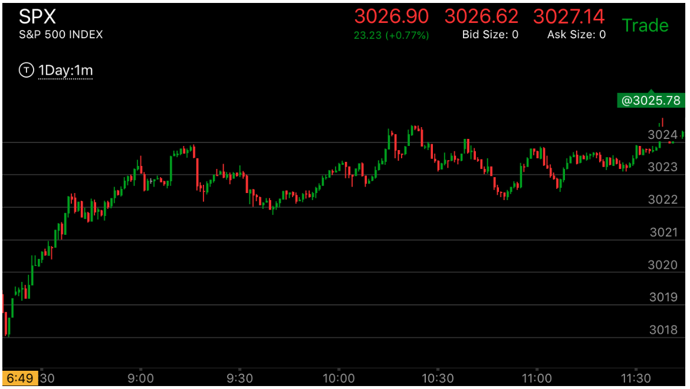
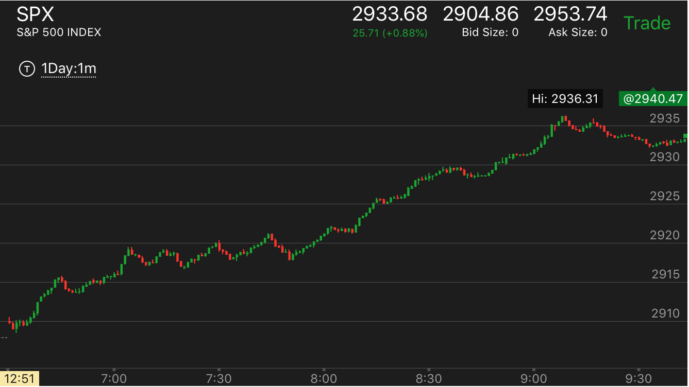
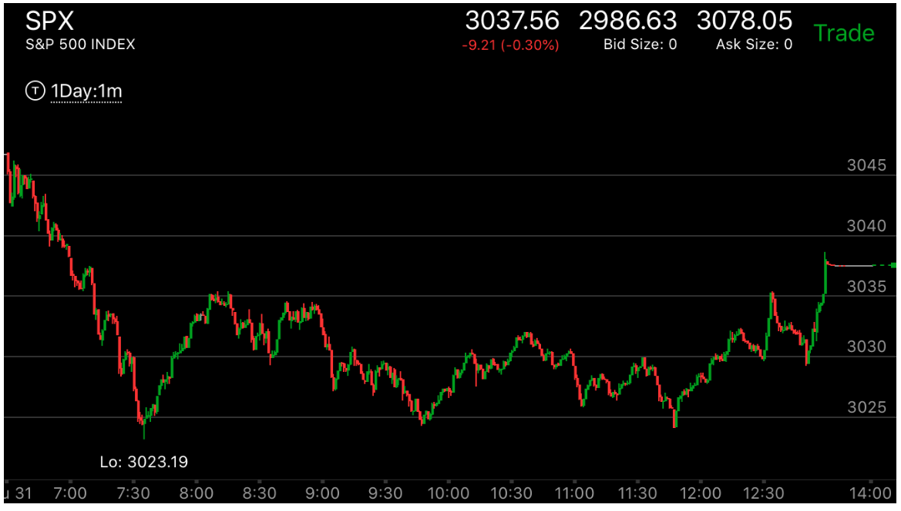

长时间走平震荡走势
先运动一段后，，开始通过震荡或者缓慢的运动来积累能量
走势开始的时候，不断的大幅反弹
前面反转后，用很长的时间来走出前面只用几分钟就下来的幅度。
长时间准备的走势，在发生回调时和没有长时间准备的走势发生反转的不同
长时间准备的走势，在发生回调时和没有长时间准备的走势发生反转的不同
TOP

图示:这个走势其实是积累走势，它在高处徘徊很久。所以一旦开始下跌就很猛烈。
下跌后，继续加速。这样就反转了。

图示：开盘出现了两段走势，再次加速后，形成了底部。大盘在这个底部的时间很长，超过一个多小时，才开始快速大涨。
到了9：50，它经过几次加速后，顶部走平。这样就开始反转。这时要注意，它的反转只会是部分反转。其实就是在填补真空。从9：00开始的上涨速度太快。它需要填补。
一旦填补完成，就会超过原来的高点。这个走势不会全面反转创新低，是因为它的启动花了很长时间，形成了一个坚实的底部。12：00回调结束后，收盘大涨，超过了前面高点。

图示：开盘后，上涨，它在第一个高点附近，发生长时间的走平。走平的时间超过一个小时。从7：20到8：20.9：00出现了一个很小的两段走势。
这个两段走势一直没有被反转。直到10：30开始下跌后，这个两段走势被反转。但是由于前面的长时间的走平。这个反转也只是反转这个两段走势，而不会真实的反转。结果它继续大涨。
超过原来的高点。
前面反转后，用很长的时间来走出前面只用几分钟就下来的幅度。
TOP

图示：8:30开始的下跌，出现了两段下跌走势，结束。开始缓慢反弹。要看到它是要反的走势是
前面的从2825开始的大跌。所以起码会涨到那里。它的反弹很慢，缓慢的建立了升势。所以这个不能算第一浪。
到了11：00Fed宣布利率。它出现了第一浪上涨。

图示：开盘后，缓慢上涨，不断的走高。建立了升势。后来大幅上涨。

图示：第一分钟就上涨，后面出现两个台阶下跌，但是幅度很小。
并没有有效跌破开盘点，然后走平。说明大市仍然处于升势。这样应该做多。

图示：开盘后，缓慢走出新高，快速拉回。这样就表示这个处于升势。它震荡很久后，开始突破新高
上涨。要考虑它积累了很久。所以不会轻易停下来。8；00的时候，出现了双顶走势，第二个顶下跌速度超过第一个顶。
说明一定会上涨，应该紧紧拿住。它下来后，出现了三段下跌走势后，大涨。它上涨后，第一波上涨，刚刚超过了前面的高点，
稍微回调后，继续上涨。这样不会让在前面高点做空的人有回补的机会。
先开始一段走势后，开始积累能量通过震荡或者缓慢的运动
TOP

图示：上涨后，在高点长时间震荡，会继续上涨。

图示：开盘后，大涨，回调很小，再次冲高，然后长时间的震荡，积累能量。这样一旦开始上涨，没有明显的走势，就很难回调。

图示：开盘后，它每下跌一点，就走平或者小幅反弹很久。这样抵消了大盘向下的方向。
11：50出现陷阱大跌。立刻出现冲高大跌后尖锐走势。然后大跌
走势开始的时候，不断的大幅反弹
TOP
1. 大幅的反弹，但是要注意不能超过前面的高点或低点，如果超过了，那么就不是这个走势

图示：
它的启动走势一直很缓慢，用了一个多小时，才开始下跌。

图示：7:00和7：30出现的反弹高点都低于前的高点，而它的低点更低。这样，它处于跌势，
而它因为大幅的反弹，而积累了下跌的能量，一旦下跌就很难反弹。不要轻易做多。

图示：开始的时候出现双顶，下跌后，反弹幅度很大，接近前面高点，然后震荡很久。
可以看到开盘两个小时都在酝酿下跌走势。这样会有很强的力量。也不需要填补真空。

图示：10：加速冲高后，在高点徘徊一个多小时，积累了很强的力量。然后大跌。不会反转。

图示：开盘后不断下跌，7：30的浪的幅度超过了开盘的幅度，而且底部走平。这个就是底部了。
它一定至少超过3045这个点，但是它立刻反弹，反弹的幅度很大，然后加速，回来。大幅震荡。可以观察，它的第一次反弹幅度很大，
第二次反弹就不如第一次，然后回到低点了。这个符合相对幅度弱势的原则。未来一定大幅上涨。但是它直到收盘才大涨。
盘后，不断上涨，第二天大幅高开高走。